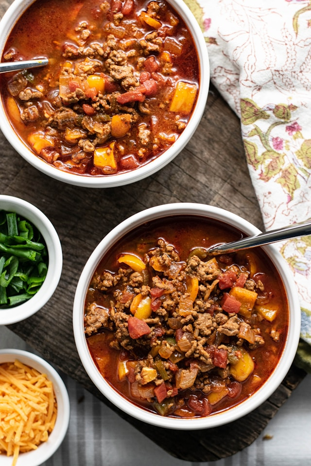

Stuffed Pepper Soup
Stuffed Pepper Soup
Home
The perfect combination of cozy and nutritious!

This hearty, flavorful soup combines the feeling of comfort food with the satisfaction of a nutritious meal.
Ingredients
- 1 pound of lean ground beef or turkey
- 2 tablespoons of olive oil, divided
- 1 yellow onion, diced
- 1 cup of green bell peppers, diced
- 1 cup of red, orange or yellow bell peppers, diced
- 2 cloves of garlic, minced
- 2, 14.5oz cans of petite diced tomatoes
- 1, 15oz can of tomato sauce
- 1, 14oz can of beef broth
- 2 1/2 teaspoons of fresh parsley, chopped, set aside 1/2 teaspoon for garnish
- 1 teaspoon of salt
- 1 teaspoon of black pepper
- 1 teaspoon of italian seasoning
- 1 teaspoon of dried oregano
- 1/2 teaspoon of onion powder
- 1/2 teaspoon of garlic powder
- 1/4 teaspoon of red pepper flakes, if you like a little spice
- 1 cup of uncooked long grain white or brown rice
- For garnish: your preferred shredded cheese, I use a blend of cheddar and mozzarella
Instructions
- In a large pot or dutch oven, heat 1 tablespoon of olive oil on medium heat for a few minutes. Once oil is warm, add your beef to the pot with a pinch of salt and pepper. While cooking, break up the beef into bite sized pieces until browned. Drain excess oil and set aside.
- In the same pot, heat the remaining tablespoon of olive oil and add in your yellow onion and bell peppers and saute until onions are translucent, about 3 minutes. Add in your garlic and saute until fragrant, about a minute.
- Add your cooked ground beef back in, along with your spices and cook for a minute. Then add in your diced tomatoes, tomato sauce and beef broth. Bring to a slight boil, reduce the heat to medium low and cover. Let simmer, stirring occasionally, for 30 minutes.
- While the soup simmers, prepare the rice according to the directions listed on the package. Add the rice directly into the soup once cooked.
- Top with your preferred cheese, garnish with parsley, and enjoy!